Archive
further collections & fashion works

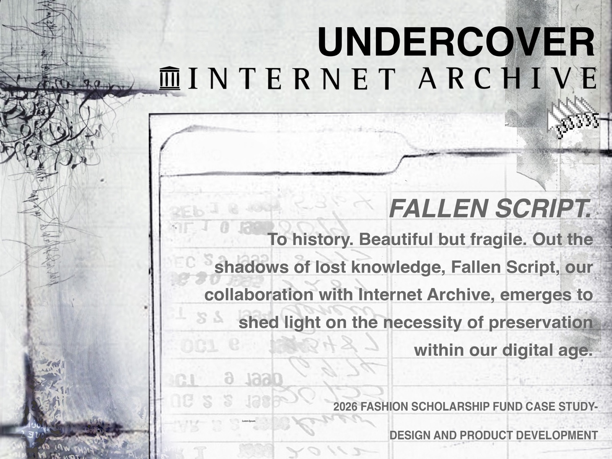
Fallen Script is a collection that brings attention to the crisis of lost knowledge within our digital age — specifically how memory, data, and truth erode over time. Inspired by deteriorating manuscripts, corrupted files, and blurred scans, the collection reimagines fashion as a living archive.
Garments are treated as artifacts, meant to be maintained, reworked, and preserved rather than discarded. Thick stripes and plaid represent the structure of archive research. Swirl motifs inspired by the borders of old books and calligraphy. Censored bar patches, sheer overlays, and deconstructed silhouettes create the sense of erasure and fragmentation.
Everything is crafted using natural dyes, repurposed materials, and slow, handcrafted techniques — prioritizing quality and longevity over fast, mass production.
Undercover × Internet Archive
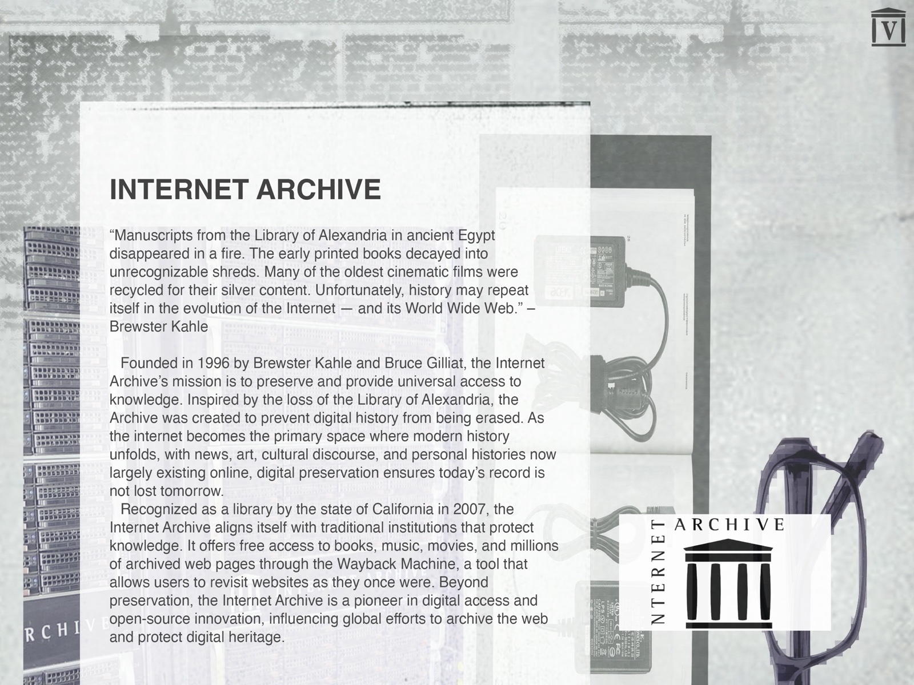
The Crisis of Lost Knowledge
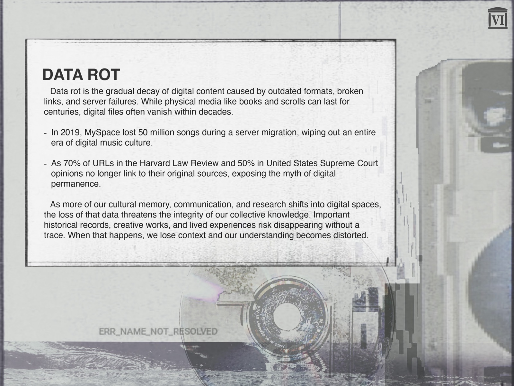
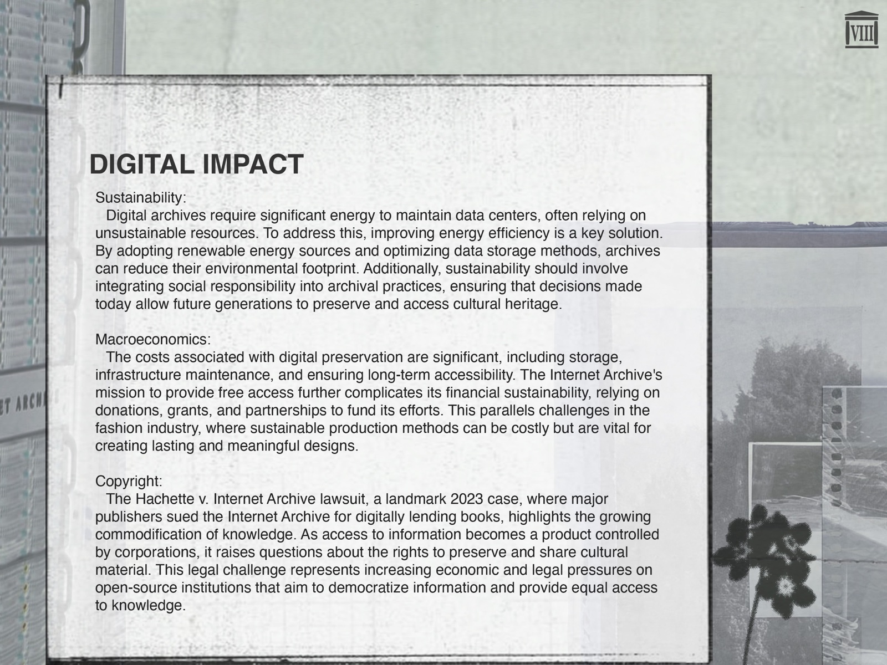
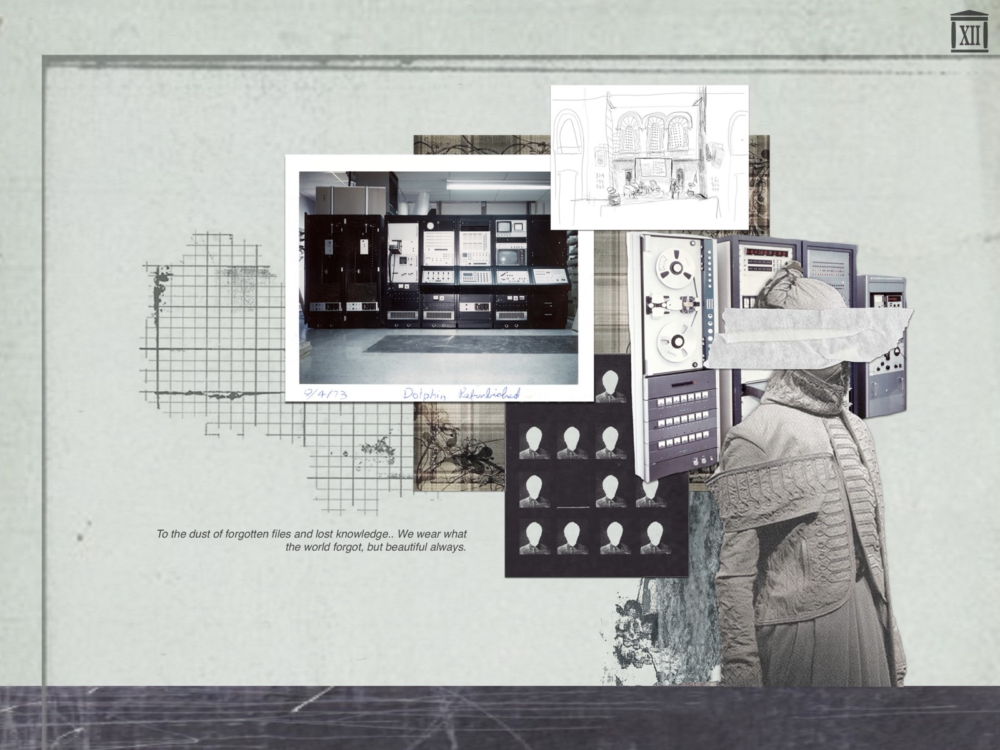
We wear what the world forgot, but beautiful always."
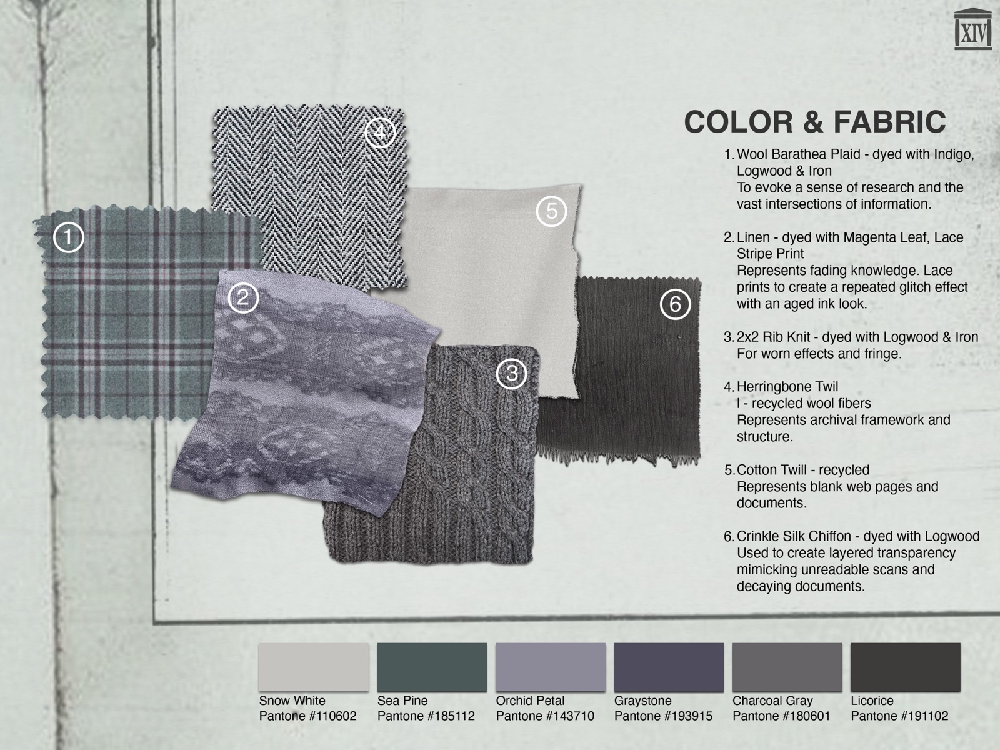
Color & Fabric
Lineup
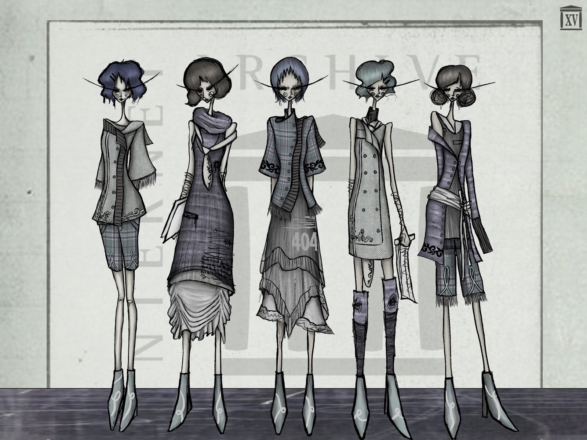
Products
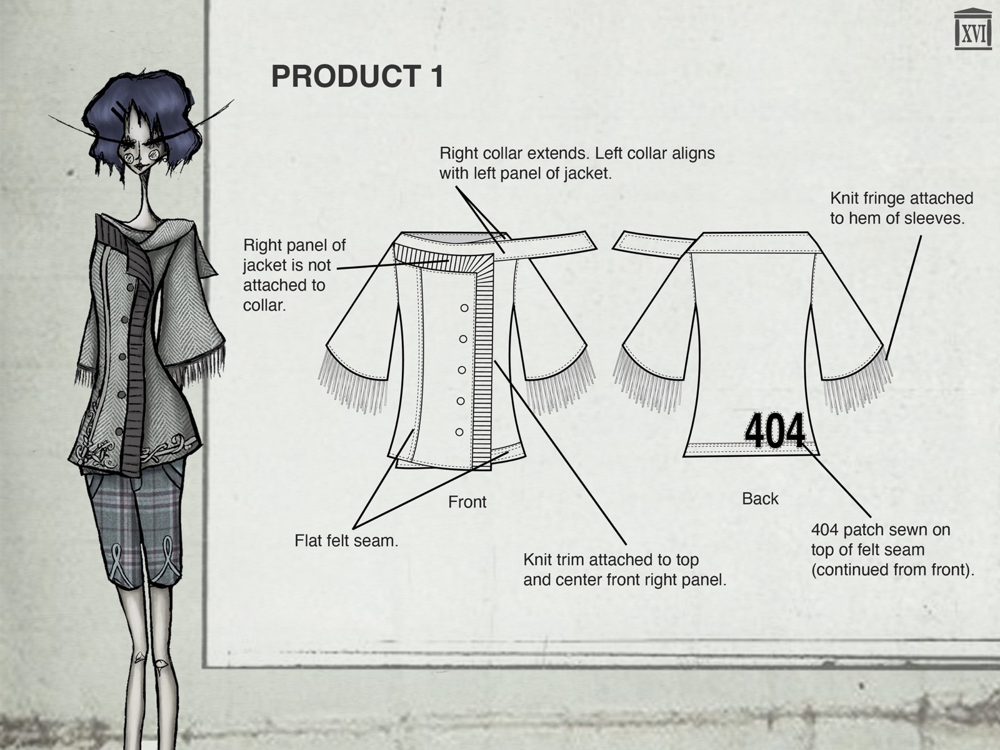
Product 01 — Jacket
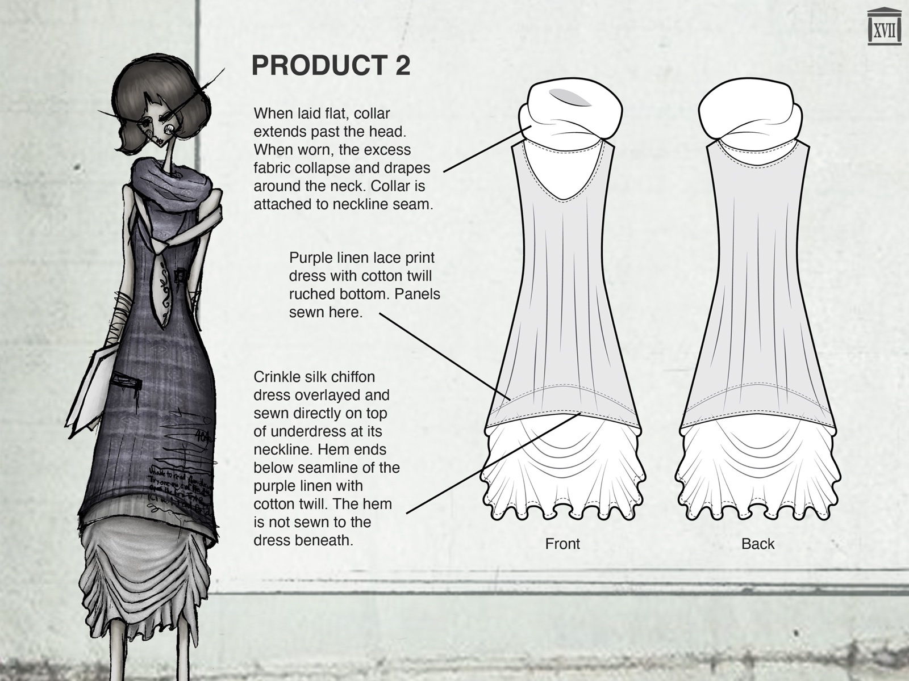
Product 02 — Dress
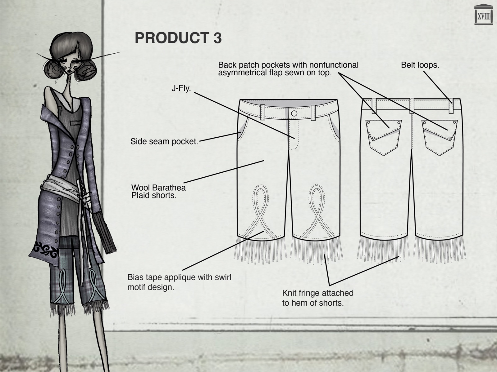
Product 03 — Shorts
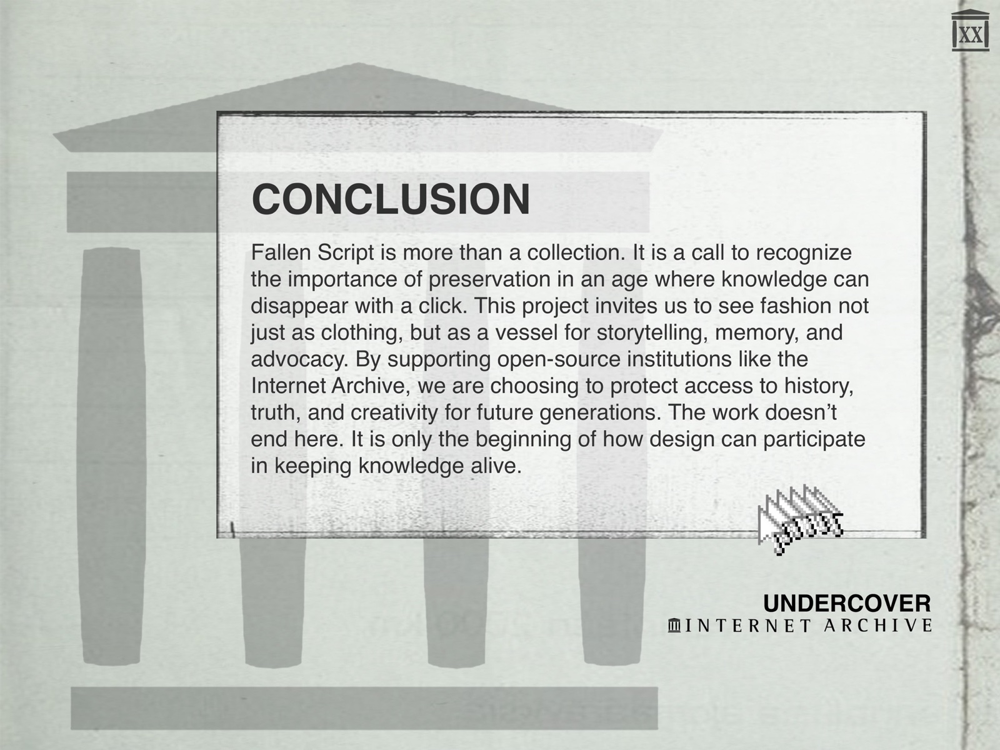
"Fallen Script is more than a collection. It is a call to recognize the importance of preservation in an age where knowledge can disappear with a click."
This project invites us to see fashion not just as clothing, but as a vessel for storytelling, memory, and advocacy. By supporting open-source institutions like the Internet Archive, we are choosing to protect access to history, truth, and creativity for future generations.
View the complete case study — all 21 slides including research, brand alignment, and references.
View Full Case StudyThe craft,
first and foremost.
A traditional bespoke tailored jacket, built from the ground up using classic construction methods — hand-pad stitching, a full chest canvas, carefully shaped shoulders, and a silk lining. The focus here is entirely on the craft itself: learning and executing the discipline of tailoring as it has always been done.
The only departure from tradition is color — a deep plum wool in place of the expected neutral.